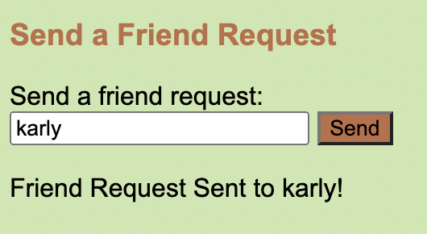
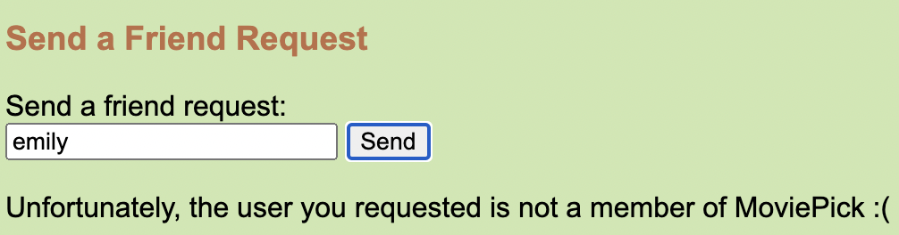
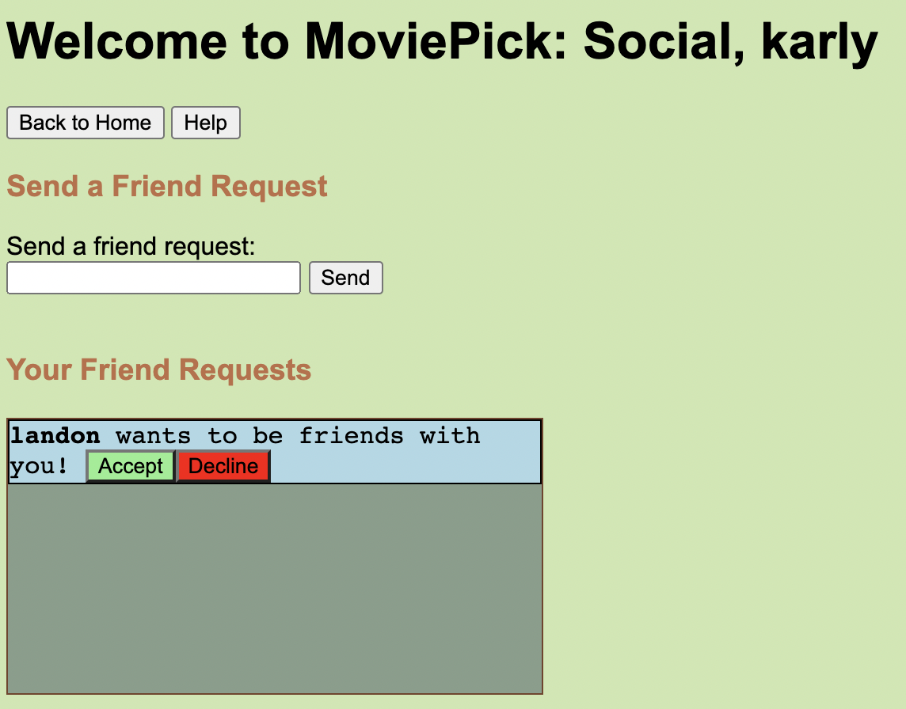
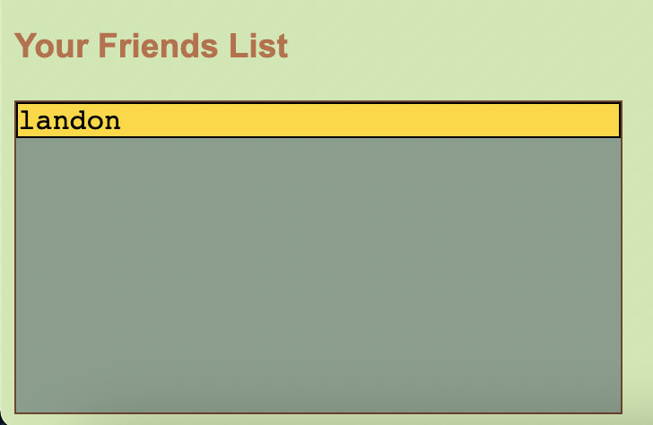
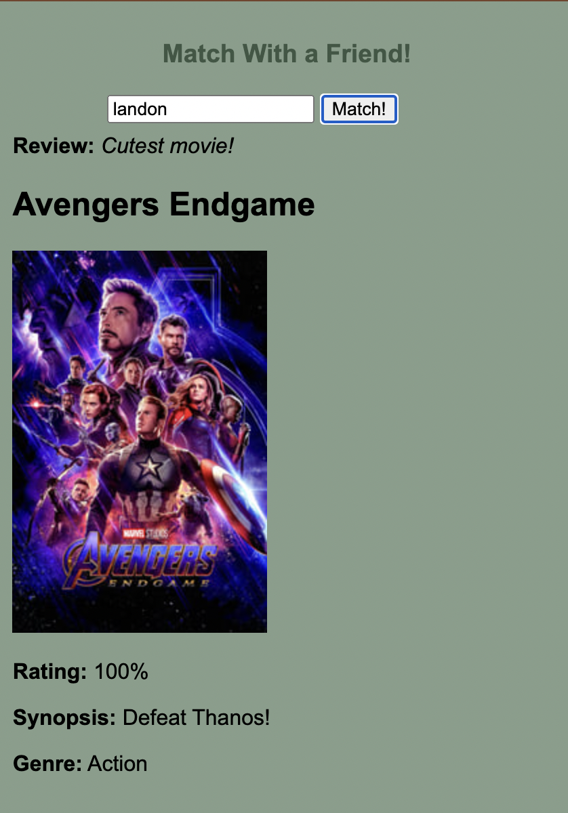

To send a request, you can type any user into the search bar and click send. If the user exists, the page will notify you saying that your request has been sent!
If the user does not exist, you will get a message saying so.
Once the request has been sent, the friend that you wish to add will get a notification, and the option to decline or accept the request.
After clicking Accept, the users will be added to each other's friends list!
After accepting a friend request, you are now able to see the movies that both you and your new friend have liked! These liked movies can always change by posting and liking more movies!
